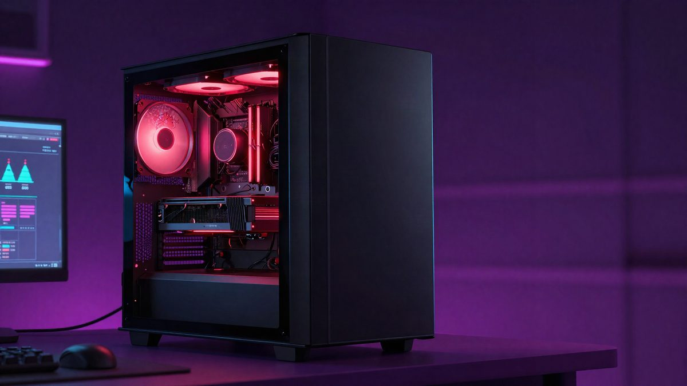

Corsair otkazao narudžbu RTX 5090 računala od 8.999 $, pa isti model poskupio za 2.400 $

Corsair je otkazao narudžbu računala Millennium s procesorom Ryzen 9 9950X3D i karticom RTX 5090, naručenog za 8.999 dolara. Ista konfiguracija ubrzo je poskupjela na 11.399 dolara. Nakon objave na društvenim mrežama Corsair je narudžbu ipak odobrio po prvotnoj cijeni.
Corsair je otkazao narudžbu gaming računala Millennium koje je korisnik s interneta, potpisan kao @msuiche, naručio za 8.999 $ (oko 7.700 eura). Ubrzo nakon otkazivanja ista konfiguracija pojavila se u prodaji za 11.399 $ (oko 9.800 eura), dakle za 2.400 $ (oko 2.050 eura) skuplje.
Računalo ima procesor AMD Ryzen 9 9950X3D, grafičku karticu RTX 5090, 64 GB DDR5 memorije i SSD od 4 TB. Isporuka je bila predviđena između 3. i 5. studenoga.
Dva razloga za otkazivanje
U obavijesti o otkazivanju Corsair navodi da se adresa za naplatu na kreditnoj kartici ne podudara s adresom narudžbe ili sa zemljom iz koje je narudžba poslana. Kupcu je predloženo da narudžbu zatraži ponovno, no cijena je do tada već bila podignuta.
To nije prvi takav slučaj. Ranije ove godine Corsair je otkazao narudžbu memorije uz obrazloženje da je cijena bila pogrešno postavljena, a zatim ju je podigao. Javno je opisan i slučaj otkazane narudžbe cijelog računala. Razlog otkazivanja ovaj je put drukčiji, ali je obrazac isti: narudžba se otkaže, a cijena naknadno poraste.
Cijena i troškovi komponenti
Cijene memorije i grafičkih kartica trenutačno rastu, a računalo od 8.999 $ s RTX-om 5090 već je samo po sebi skupo. Skok od 2.400 $ ipak je, prema izvoru, znatno veći nego što bi se mogao objasniti promjenom troška komponenti.
Ishod
Nakon što je slučaj dospio na društvene mreže, Corsair je odgovorio da je problem proslijeđen višoj razini podrške. Kupac je na kraju dobio novu narudžbu po prvotnoj cijeni od 8.999 $.
To je uslijedilo tek nakon javnog pritiska, a nije poznato bi li kupac koji svoj slučaj nije objavio dobio isti tretman.
Izvor: MyDrivers (快科技)